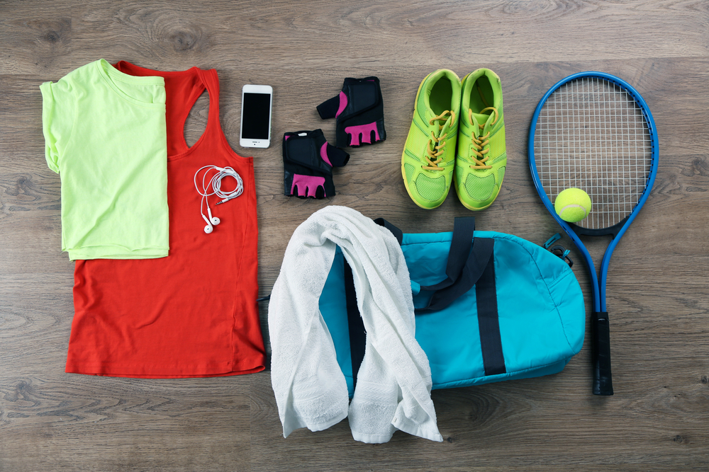
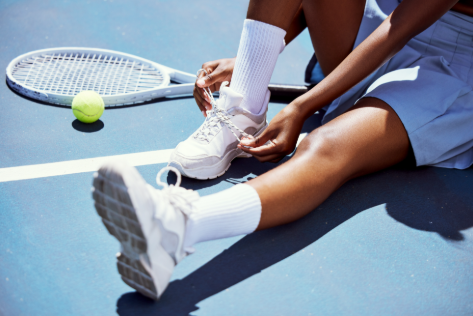
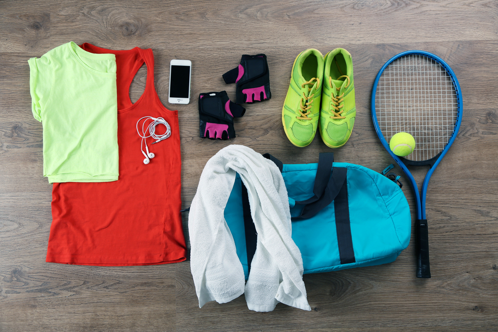
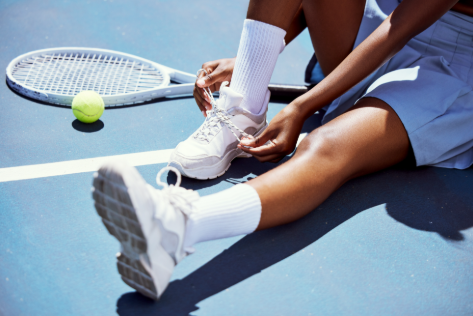

Tênis
O tênis é um esporte que combina técnica, estratégia e resistência física. As peças de roupa e a bola desempenham papéis fundamentais na performance dos jogadores, oferecendo conforto, proteção e funcionalidade durante partidas que podem durar horas. As camisetas no tênis são feitas de tecidos leves e respiráveis, como poliéster ou misturas de algodão com tecnologia de secagem rápida. Os modelos variam entre regatas, polos e camisetas de manga curta, permitindo que os jogadores escolham o que melhor se adapta ao seu estilo e conforto. Para as mulheres, os tops esportivos proporcionam suporte adicional durante movimentos intensos. Os shorts masculinos oferecem liberdade de movimento, geralmente com bolsos profundos para carregar bolas extras. As mulheres costumam usar saias ou vestidos esportivos, muitas vezes com shorts embutidos para maior conforto e praticidade. Essas peças combinam elegância com funcionalidade. Os tênis são projetados especificamente para o esporte, com solas que proporcionam aderência em diferentes tipos de quadra (saibro, grama ou piso duro). Eles possuem reforço lateral para suportar movimentos rápidos e amortecimento para proteger os pés durante os saltos e corridas. Os jogadores frequentemente utilizam faixas de cabeça, munhequeiras e bonés para conter o suor e proteger os olhos do sol em partidas ao ar livre. Alguns também usam tornozeleiras ou cotoveleiras para suporte adicional e prevenção de lesões. As bolas de tênis têm um diâmetro de 6,54 a 6,86 cm e pesam entre 56 e 59,4 gramas. Esses padrões são rigorosamente definidos para garantir consistência no jogo. A bola é composta por um núcleo de borracha oca, coberto por uma camada de feltro sintético. Esse feltro ajuda na aerodinâmica e oferece controle ao jogador, influenciando a velocidade e o quique. As peças de roupa e a bola de tênis são componentes essenciais que combinam inovação tecnológica e design para melhorar a experiência dos jogadores. Elas garantem conforto, segurança e desempenho, enquanto mantêm o estilo característico desse esporte fascinante.
Copyright
 


